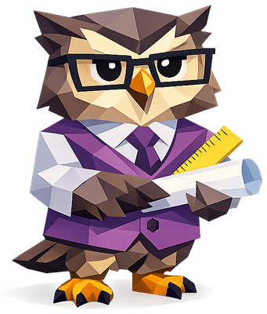

We scan your local chat history, score patterns with embeddings, and map your strongest tendency to one of five personas.
Read local histories from Claude Code, Codex, Copilot Chat, Cursor, and LM Studio. Nothing leaves your machine.
Keep only human-authored prompts. Strip system messages, tool output, and assistant responses.
Embed each prompt with bge-small-en-v1.5 locally. Cosine similarity to reference clusters scores 7 metrics.
Four radar axes — Precision, Curiosity, Tenacity, Trust — determine which persona fits your pattern.

You think in specs, constraints, and acceptance criteria. You want the AI to follow the plan closely and you tend to review outputs carefully.